第六章 数据的收集与整理（高效培优单元测试·提升卷）
第六章 数据的收集与整理（高效培优单元测试·提升卷）
（考试时间：120分钟 试卷满分：120分）
一、选择题（本大题共10小题，每小题3分，共30分）
1．下列属于定性数据的是（ ）
A．某市中学生的视力情况 B．某种新研发的战斗机零部件是否合格
C．一批电灯泡的使用寿命 D．《朗读者》的收视率
【答案】B
【分析】根据定性数据的意义判断即可．本题考查了调查收集数据的过程与方法，根据定性数据的意义做出正确的判断是解题的关键．
【详解】解：A、某市中学生的视力情况是定量数据，故不符合题意；
B、某种新研发的战斗机零部件是否合格是定性数据，故符合题意；
C、一批电灯泡的使用寿命是定量数据，故不符合题意；
D、《朗读者》的收视率是定量数据，故不符合题意．
故选：B．
2．下列采用的调查方式中，合适的为（ ）
A．了解全市学生观看“开学第一课”的情况，采用抽样调查
B．高铁站对乘坐高铁的旅客进行安检，采用抽样调查
C．出版社审核书稿中的错别字，采用抽样调查
D．调查某池塘中现有鱼的数量，采用全面调查
【答案】A
【分析】本题考查抽样调查与全面调查的选择，根据调查对象的范围、可行性和必要性进行判断：全面调查适用于范围小、要求精确或不可破坏的情况；抽样调查适用于范围大、耗时或具有破坏性的情况，根据以上知识点逐项分析即可得解，熟练掌握抽样调查与全面调查的相关概念是解此题的关键．
【详解】解：A、全市学生数量庞大，全面调查难度大，采用抽样调查合理，故原说法正确，符合题意；
B、高铁安检需确保每位旅客安全，必须全面检查，不能抽样，故原说法错误，不符合题意；
C、审核书稿需检查所有内容，避免遗漏错别字，应全面调查，故原说法错误，不符合题意；
D、池塘鱼的总数无法逐一统计，需通过抽样估算（如标记重捕法），故原说法错误，不符合题意；
故选：A．
3．为反映近十年我国GDP随年份的变化情况，并预测下一年的GDP数值，宜采用的统计图是（ ）
A．趋势图 B．折线图 C．条形图 D．直方图
【答案】A
【分析】根据统计图的特征，结合题意解答即可．
本题考查统计图的选择，需根据数据特点及需求确定合适的统计图类型．
【详解】解：根据题意，要预测下一年的发展趋势，需要制作趋势图，
故选：A．
4．为了解某校学生的睡眠时间，下列抽样调查中样本具有代表性的是（ ）
A．选择九年级一个班的学生进行调查；
B．选择全校的男生进行调查；
C．对全校成绩排名前 的学生进行调查；
的学生进行调查；
D．每个班级随机抽取 的学生进行调查．
的学生进行调查．
【答案】D
【详解】本题考查的是样本的特点，抽样调查的样本需具有代表性和随机性，应覆盖总体中的不同群体，避免偏差，根据样本特点逐一分析即可．
【分析】解：选项A：仅选取九年级一个班，样本范围过小且局限于特定年级，无法反映全校情况．
选项B：仅调查男生，忽略女生，存在性别偏差，样本不全面．
选项C：选择成绩前的学生，此类学生作息可能异于其他学生，导致结果偏差．
选项D：每个班级随机抽取，既保证各班级均有覆盖，又通过随机性减少人为干扰，样本分布均匀，最具代表性．
故选：D
5．某校有学生近两千余人，需要建造新的自行车停车棚，于是采用抽样调查的方式了解同学们骑自行车的情况，拟定以下步骤：
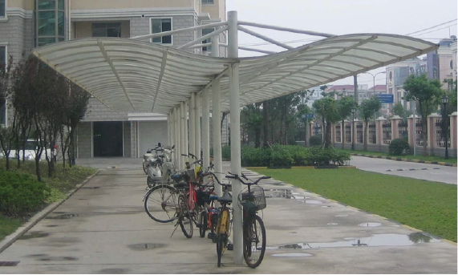
①从每班随机抽取10人进行调查；②设计骑自行车情况的调查问卷；
③用样本估计总体；④整理收集的数据．其中排序正确的是（ ）
A．①②③④ B．②①③④ C．②①④③ D．①④②③
【答案】C
【分析】根据统计调查的一般过程得出答案．
【详解】解：几个步骤进行排序为：
②设计骑自行车情况的调查问卷；
①从每班随机抽取10人进行调查；
④整理收集的数据；
③用样本估计总体；
∴排序为②①④③，
故选C．
【点睛】此题主要考查了调查收集数据的过程与方法，正确进行数据的调查步骤是解题关键．
6．某地区为推进垃圾分类教育，对初中生进行垃圾分类知识普及效果调查．在该地区6000名初中生中随机抽取200名初中生，发现其中有60名学生能正确回答“废旧电池属于有害垃圾”．据此样本，估计该地区掌握这一垃圾分类知识的初中学生大约有（ ）
A．1200名 B．1500名 C．1800名 D．2000名
【答案】C
【分析】本题考查了用样本的百分比估计总体的数量，掌握用样本估计总体的思想是解题的关键．
用6000乘以样本中能正确回答“废旧电池属于有害垃圾”的人数所占的百分比求解即可．
【详解】
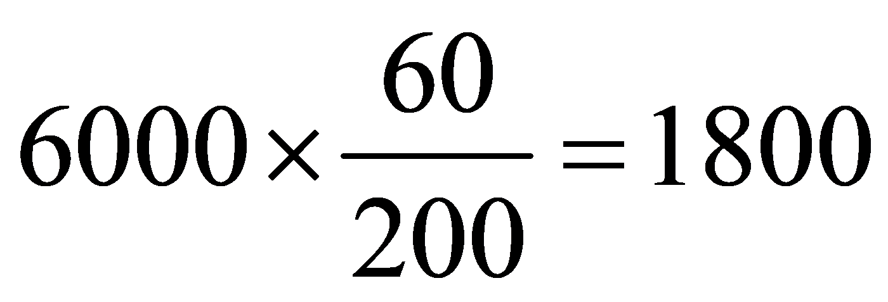
（名）∴估计该地区掌握这一垃圾分类知识的初中学生大约有1800名．
故选：C．
7．为了了解某地区5200名初中毕业生参加中考的数学成绩，从中抽取了500名考生的数学成绩进行统计分析，下列说法正确的是（ ）．
A．个体是指每个考生
B．5200名考生是总体
C．500名考生的成绩是总体的一个样本
D．样本容量为500名考生
【答案】C
【分析】本题考查了总体、个体、样本、样本容量的定义，解题要分清具体问题中的总体、个体与样本，关键是明确考查的对象．总体、个体与样本的考查对象是相同的，所不同的是范围的大小．样本容量是样本中包含的个体的数目，不能带单位．根据总体、个体、样本、样本容量的定义逐项判断．
【详解】A．个体指每个考生的数学成绩，而非考生本身，故A错误．
B．总体是5200名考生的数学成绩全体，而非考生人数，故B错误．
C．500名考生的数学成绩是从总体中抽取的样本，描述正确，故C正确．
D．样本容量是500，不带单位，“500名考生”表述错误，故D错误．
故选：C．
8．甲、乙两家公司去年上半年的盈利情况统计图如图所示，下列结论不正确的是（ ）

A．1到3月份，乙公司的利润在上涨 B．上半年甲公司的利润一直在下降
C．3月份时两家公司获得的利润一样 D．7月份乙公司的利润一定比甲公司多
【答案】D
【分析】本题主要考查了折线统计图．直接观察统计图，逐项判断，即可求解．
【详解】解：A、1到3月份，乙公司的利润在上涨，故本选项正确，不符合题意；
B、上半年甲公司的利润一直在下降，故本选项正确，不符合题意；
C、3月份时两家公司获得的利润一样，故本选项正确，不符合题意；
D、7月份乙公司的利润不一定比甲公司多，故本选项错误，符合题意；
故选：D
9．学校七年级同学在1分钟跳绳测试后，抽取部分同学的成绩（次数为整数），整理画出如图所示的频数分布直方图，下面描述不正确的是（ ）
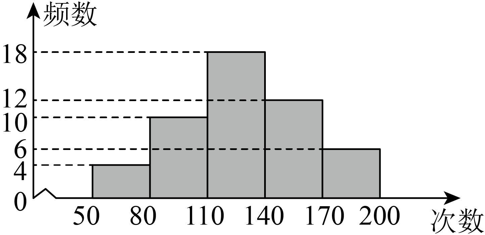
A．频数最多的是
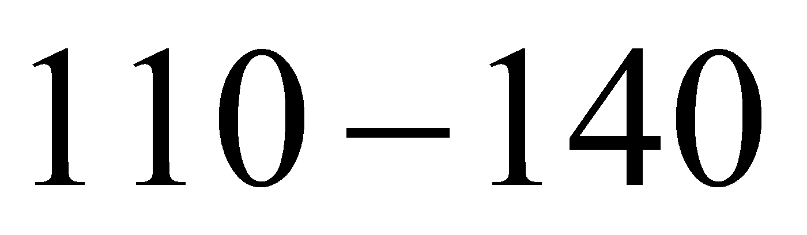
这一组 B．直方图中的组距是30C．本次抽样的样本容量是50 D．优秀率（高于140次）是
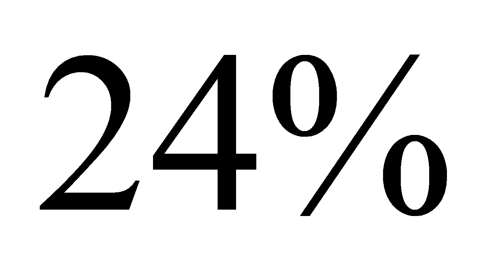
【答案】D
【分析】本题考查了频数分布直方图，根据数据描述求频数，样本容量．从频数分布直方图中的信息逐项求解即可．
【详解】解：频数最多的是这一组，频数为18，故A正确，不符合要求；
由题意知，频数分布直方图中组距是
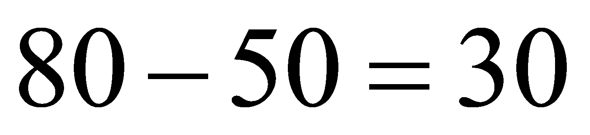
，故B正确，不符合要求；本次抽样样本容量是
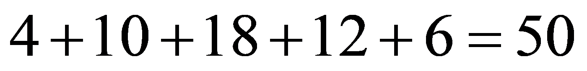
，故C正确，不符合要求；这次测试优秀率（高于140次）为
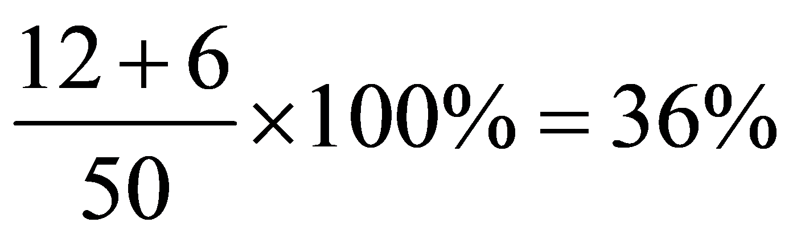
，故D错误，符合要求．故选：D．
10．人口老龄化是全球热点问题，下图是某机构对
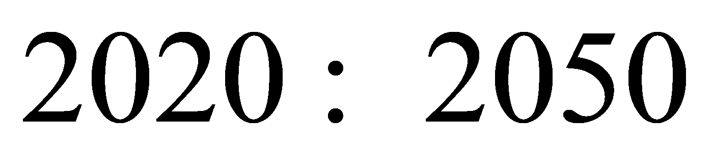
年我国老年人数量预测图，根据图中数据，下列说法不正确的是（ ）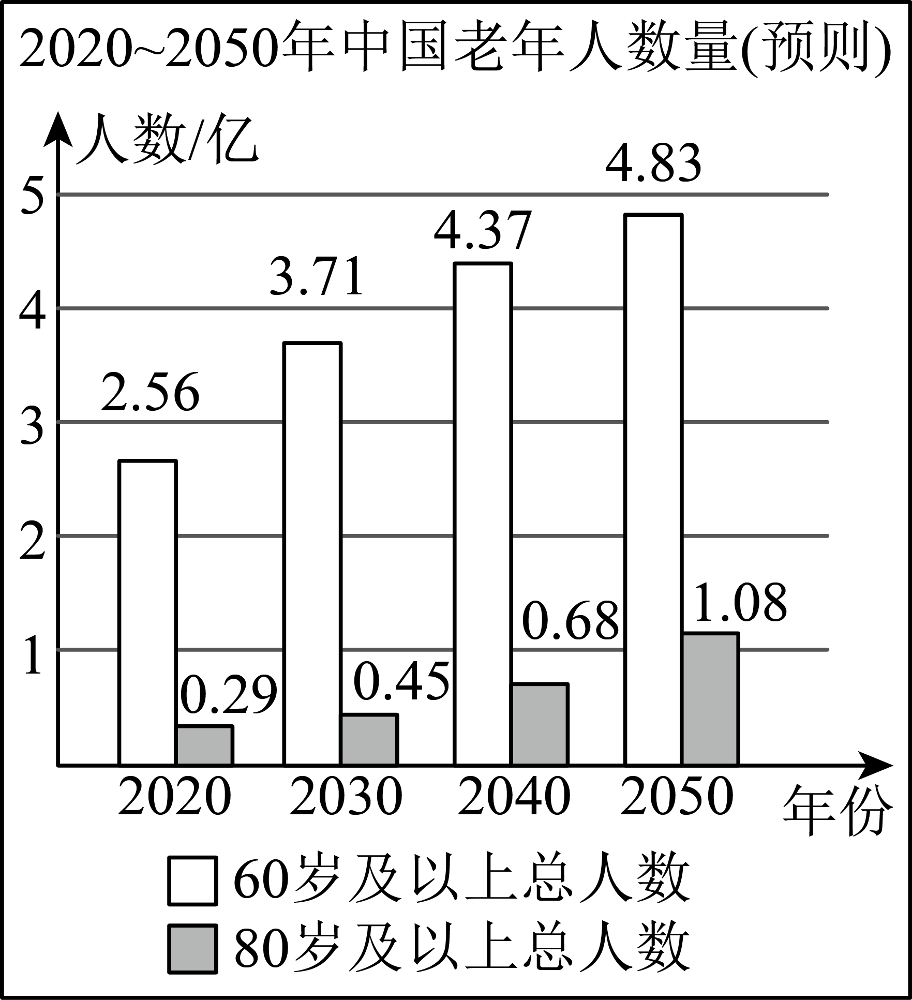
A．预计2050年我国60岁及以上老年人数量将超过4.8亿
B．预计
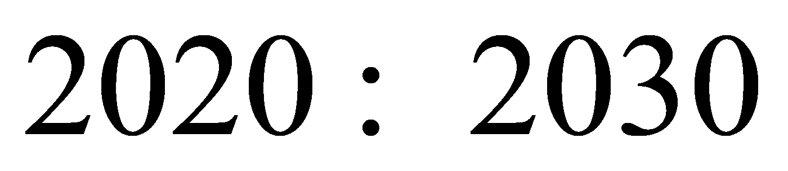
年我国60岁及以上老年人数量增长最多C．预计2050年我国80岁及以上老年人数量将超过全国60岁及以上总人数的
D．预计
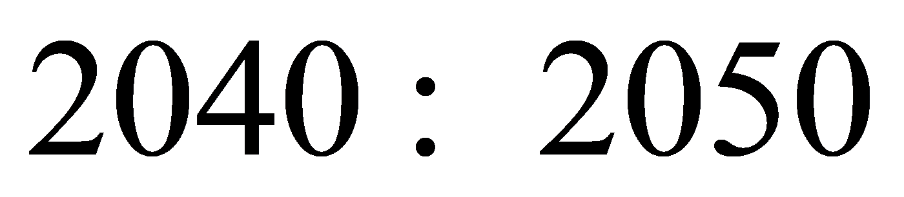
年我国80岁及以上老年人数量增长最多【答案】C
【分析】此题考查了条形统计图，根据从条形统计图获取的信息进行判断即可．
【详解】解：A. 预计
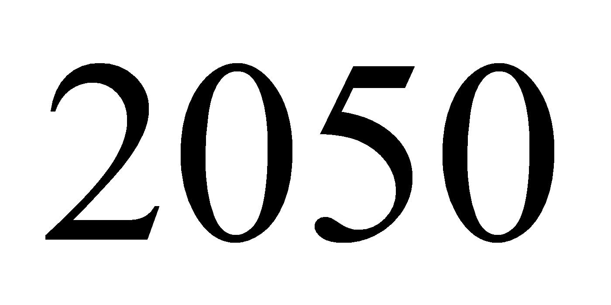
年中国60岁以上老年人数量将达到4.83亿人，故选项正确，不符合题意；B.
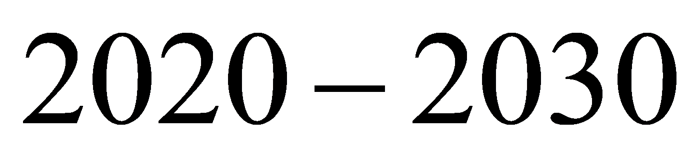
年中国60岁以上老年人数量增长最多，故选项正确，不符合题意；C. 预计2050年我国80岁及以上老年人数量将超过全国60岁及以上总人数的
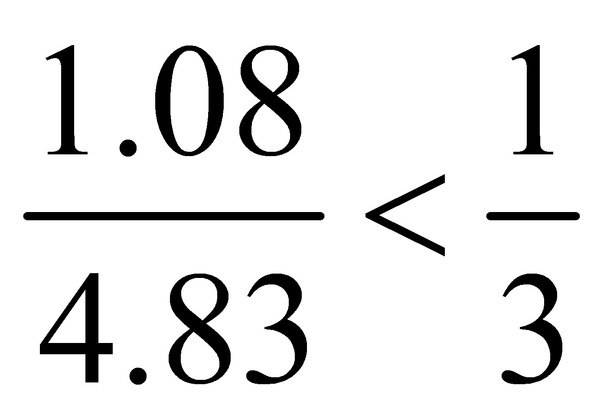
，故选项不正确，符合题意；D. 预计年我国80岁及以上老年人数量增长最多，故选项正确，不符合题意；
故选：C．
二、填空题（本大题共6小题，每小题3分，共18分）
11．某班学生的体重情况是 ．（填“定量数据”或“定性数据”）
【答案】定量数据
【分析】本题考查了定性数据和定量数据的定义，定量数据是表示事物数字特征的数据，定性数据表示事物性质属性的数据，熟练掌握定性数据和定量数据的定义是解题的关键．
根据定性数据和定量数据的定义即可得到结果．
【详解】解：某班学生的体重情况是定量数据，
故答案为：定量数据．
12．2024年5月3日17时27分，嫦娥六号探测器由长征五号遥八运载火箭在中国文昌航天发射场发射，约一小时后，探测器准确进入地月转移轨道，发射任务获得圆满成功．发射前为确保万无一失，工程师对运载火箭的所有零部件进行了检查，应采用的调查方式是 ．（填“普查”或“抽样调查”）
【答案】普查
【分析】本题考查了全面调查，抽样调查的识别，根据题意，结合全面调查，抽样调查的概念进行判定即可．
【详解】解：工程师对运载火箭的所有零部件进行了检查，应采用的调查方式是普查，
故答案为：普查．
13．【统计图】甲、乙两家汽车销售公司根据近几年的销售量分别制作如图统计图：
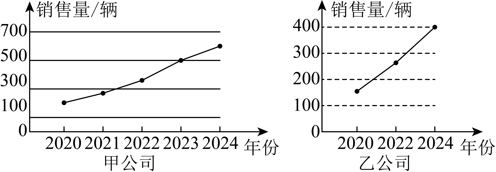
从2020年到2024年，这两家公司中销售量增长较快的是 公司．（填“甲”或“乙”）
【答案】甲
【分析】本题主要考查了折线图，从折线的陡峭情况来判断，很易错选乙公司；但是两幅图中横轴的组距选择不一样，所以就没法比较了，因此还要抓住关键．结合折线统计图，求出甲、乙各自的增长量即可求出答案．
【详解】解：从折线统计图中可以看出：
甲公司2020年的销售量约为200辆，2024年约为600辆，则从2020～2024年甲公司增长了约
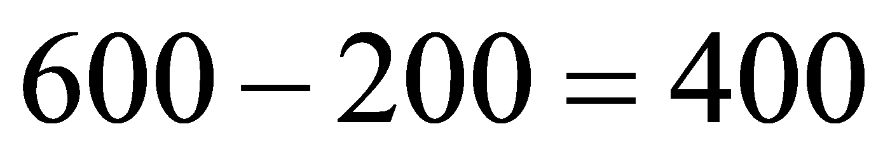
辆；乙公司2020年的销售量约为150辆，2024年的销售量为400辆，则从2020～2024年，乙公司销售量增长了约
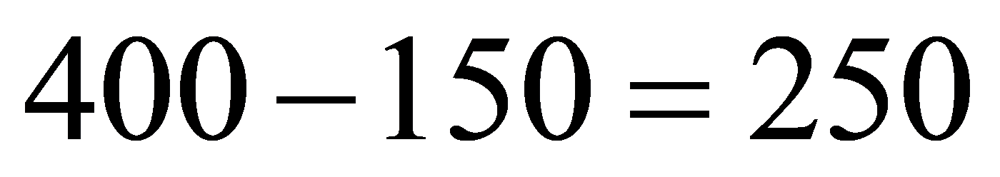
辆；∴甲公司销售量增长的较快．
故答案为：甲．
14．在某市中小学科技创新大赛中，共有200支参赛队伍参与“智能机器人避障”项目角逐．组委会随机抽取了40支队伍进行赛前模拟测试，发现其中有12支队伍能成功完成所有避障任务．据此估计全市200支参赛队伍中，能成功完成所有避障任务的队伍有 支．
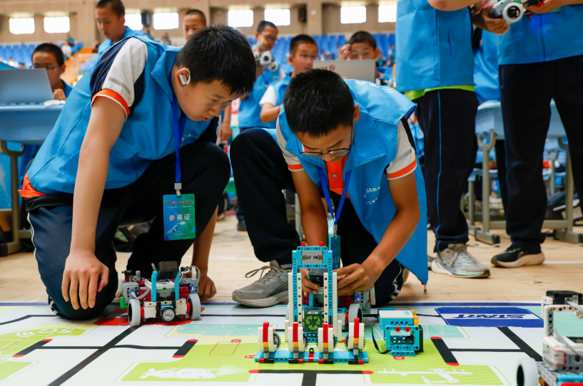
【答案】60
【分析】本题考查了随机抽查概率求样本容量问题，熟悉相关知识点是解题的关键；根据组委会随机抽取了40支队伍进行赛前模拟测试，发现其中有12支队伍能成功完成所有避障任务，得40支队伍成功完成所有避障任务的队伍的概率为：
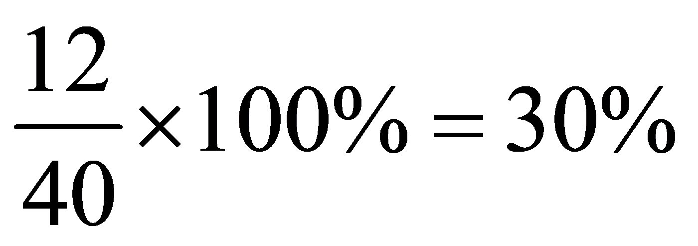
，从而即可求解.【详解】解：∵组委会随机抽取了40支队伍进行赛前模拟测试，发现其中有12支队伍能成功完成所有避障任务；
∴抽取了40支队伍成功完成所有避障任务的概率为：
∴成功完成所有避障任务的队伍有
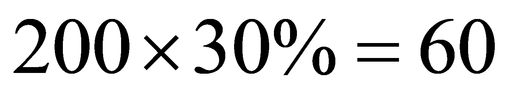
（支）故答案为：60.
15．在对某班的一次数学测验成绩进行统计分析中，各分数段的人数如图所示（分数取正整数，满分
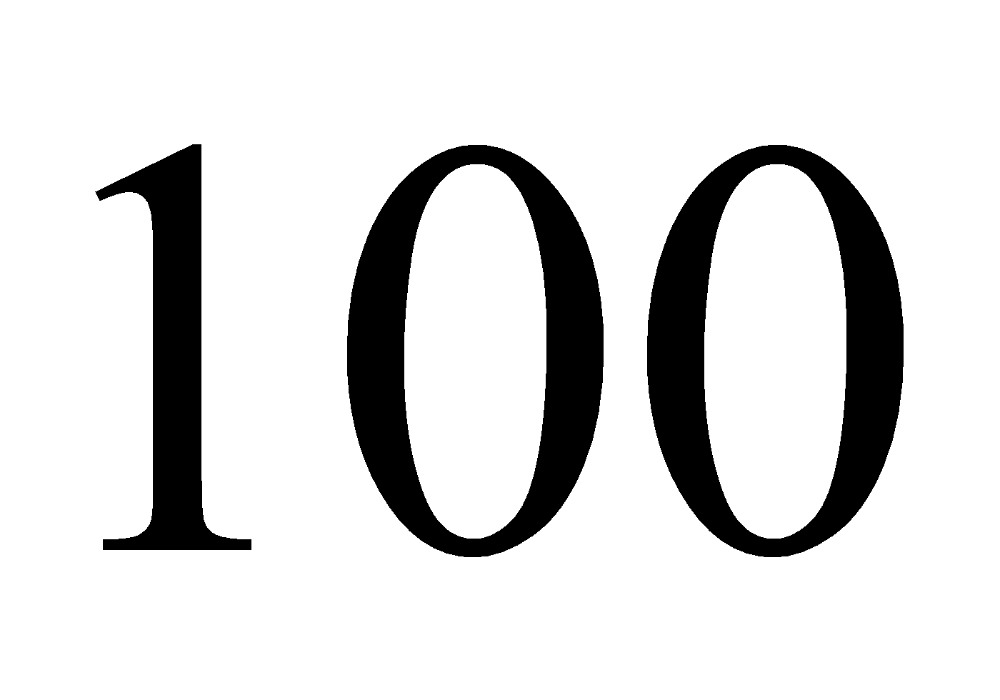
分），请观察图形，并回答下列问题：
（1）该班有 名学生；
（2） 这一组的频数是 ，频率是 ．
这一组的频数是 ，频率是 ．
【答案】 


【分析】本题考查了频数分布直方图和利用统计图获取信息的能力，某个对象的频数是指这个对象出现的次数，且频率 频数
频数 总数．
总数．
（1）各组频数的和即学生总数；
（2）观察图象可知
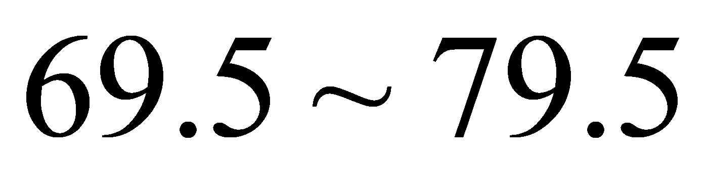
这一组的频数，根据频率的计算公式即可求得频率．【详解】解：（1）
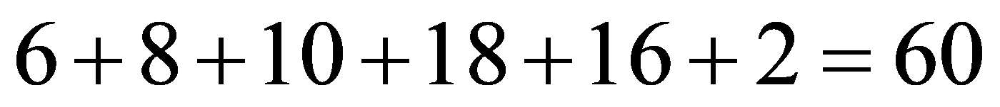
（名），故答案为：；
（2）这一组的频数是，频率是
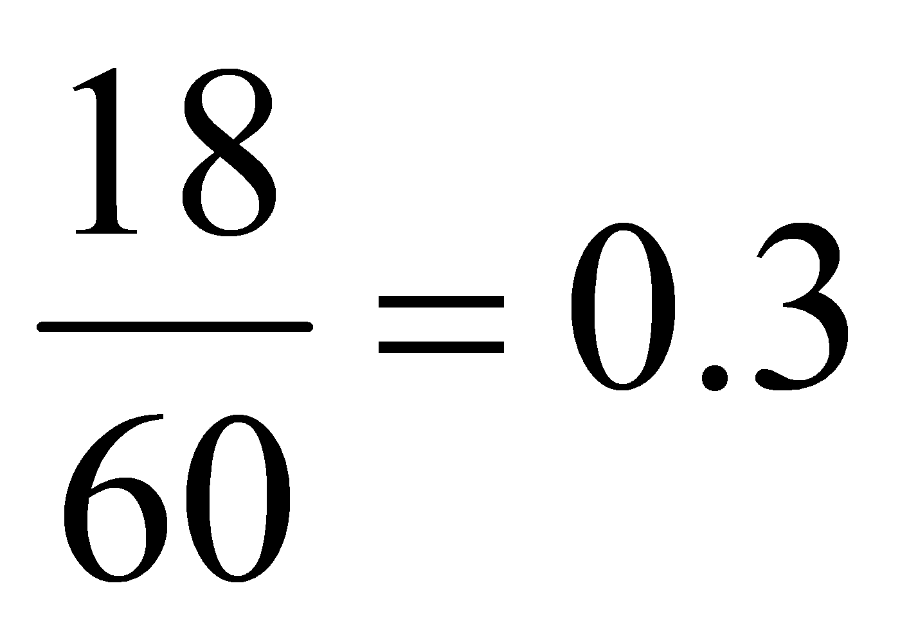
，故答案为：，．
三、解答题（第17，18，19，20题，每题6分；第21，22，23题，每题8分；第24，25题，每题12分；共9小题，共72分）
16．下面哪些数据是定量数据，哪些数据是定性数据？
（1）某校七年级 名学生的视力；
名学生的视力；
（2）某班学生每天写作业的时长；
（3）某班同学某一课时的作业完成质量情况．
【答案】（1）（2）是定量数据；（3）是定性数据．
【分析】本题考查了调查收集数据的过程与方程，利用定量数据和定性数据的意义进行判断．
【详解】解：（1）某校七年级名学生的视力是定量数据；
（2）某班学生每天写作业的时长是定量数据；
（3）某班同学某一课时的作业完成质量情况是定性数据．
17．对于下面的调查问题，你觉得用什么调查方式比较合理？
(1)调查在菜市场买的鸡蛋是否有破损；
(2)电视台想知道某电视连续剧的收视率；
(3)调查中国“蛟龙号”深水探测器在深潜之前，工作人员正在做最后一道工序的检查．
【答案】(1)调查在菜市场买的鸡蛋是否有破损用普查
(2)电视台想知道某电视连续剧的收视率用抽样调查
(3)调查中国“蛟龙号”深水探测器在深潜之前，工作人员正在做最后一道工序的检查用普查
【分析】本题考查了抽样调查和普查的区别，选择普查还是抽样调查要根据所要考查的对象的特征灵活选用，一般来说，对于具有破坏性的调查、无法进行普查、普查的意义或价值不大时，应选择抽样调查，对于精确度要求高的调查，事关重大的调查往往选用普查．适合普查的方式一般有一下几种：①范围较小；②容易掌控；③不具有破坏性；④可操作性较强；结合本题所给的事例，运用上述普查适用的范围即可求解，不适合普查的可选择抽样调查．
【详解】（1）解：去菜市场买的鸡蛋想知道是否有破损，由于购买的鸡蛋不多，应该用普查；
（2）解：电视台想知道某电视连续剧的收视率，应该用抽样调查；
（3）解：中国“蛟龙号”深水探测器在深潜之前，工作人员正在做最后一道工序的检查，应该用普查．
18．如图是六（1）班同学最喜欢的体育运动项目的统计图．

(1)如果有12人喜欢踢足球，那么喜欢打乒乓球的有多少人？
(2)有人认为喜欢踢毽子的人数最少，你同意这种观点吗？为什么？
【答案】(1)15人
(2)不同意，理由见解析
【分析】本题考查了扇形统计图的相关知识，解决本题的关键是掌握扇形统计图占比与人数之间的关系．
（1）先由踢足球的占比求出六（1）班总人数，再根据打乒乓球占 求解即可；
求解即可；
（2）先求出踢毽子的占比，再根据“其他”占比判断即可．
【详解】（1）∵踢足球占比为，
∴六（1）班总人数为
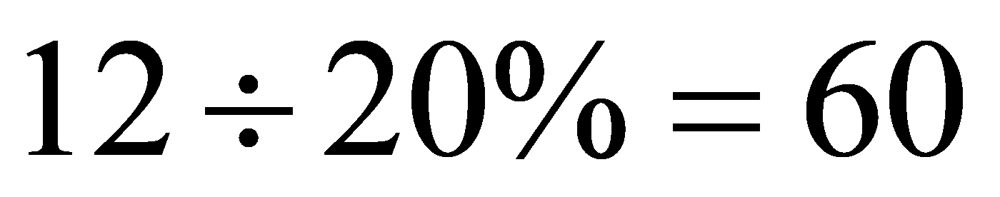
人，∴喜欢打乒乓球的有
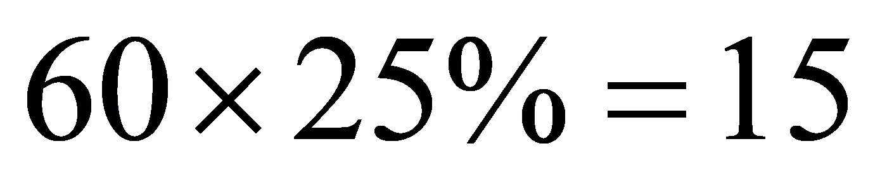
人，答：喜欢打乒乓球的有15人．
（2）答：不同意，理由如下，
踢毽子占
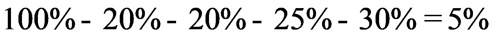
，而“其他”占20%，
里面可能还有喜欢某项体育运动项目的人数占全班人数的百分比不足5%．
19．为了考察一所中学的教学水平，将对该校七年级部分学生的本学年考试成绩进行考察．为了全面反映实际情况，采取以下方式进行抽样（已知该校七年级共有20个教学班，并且每个班的学生人数相同）：从全年级20个班中随机抽取1个班，再从该班中随机抽取20人，考察他们的考试成绩．根据上面的叙述，请回答下面的问题：
(1)该所中学的教学水平是 （填“定量数据”或“定性数据”）；
(2)其中总体、个体、样本分别指什么？样本的容量是多少？
(3)试写出上面抽取样本的步骤．
【答案】(1)定性数据
(2)总体是该校七年级全体学生本学年的考试成绩；个体是七年级每个学生本学年的考试成绩；样本是所抽取的20名学生本学年的考试成绩．样本容量是20
(3)见解析
【分析】此题主要考查了抽样调查，关键是掌握抽样调查的定义．
（1）根据题意写出答案即可；
（2）总体是指考查的对象的全体，个体是总体中的每一个考查的对象，样本是总体中所抽取的一部分个体，而样本容量则是指样本中个体的数目；
（3）根据抽样调查的定义求解即可．
【详解】（1）解：由题意得，该所中学的教学水平是定性数据；
故答案为：定性数据；
（2）解：总体是该校七年级全体学生本学年的考试成绩；个体是七年级每个学生本学年的考试成绩；样本是所抽取的20名学生本学年的考试成绩．样本容量是20；
（3）解：示例：
①先在这20个班中用抽签法抽取1个班；
②然后从抽取的这个班中按学号用抽签法抽取20名学生，考察其考试成绩．
20．足球运动是全球体育界最具响力的单项体育运动，故有世界第一大运动的美称．为了解某校八年级学生对足球运动的喜爱情况做了问卷调查，下面是对某校八年级全体学生的调查结果：
男同学 | 女同学 | |
喜爱的 | 90 | 46 |
不喜爱的 | 20 | 44 |
根据调查结果回答以下问题：
(1)本次调查采取的调查方式是______；（填“普查”或“抽样调查”）
(2)该校八年级全体学生有______名；
(3)男同学喜爱足球的人数占八年级全体学生的百分比是多少？
【答案】(1)普查
(2)200
(3)男同学喜爱足球的人数占八年级全体学生的百分比是
【分析】（1）根据此次调查是对某校八年级全体学生的调查即可得到答案；
（2）将喜欢与不喜欢足球的男、女同学人数加起来即可解答；
（3）用喜欢足球的男同学的人数除以总的人数即可得到答案．
【详解】（1）解： 此次调查是对某校八年级全体学生的调查，
此次调查是对某校八年级全体学生的调查，
 本次调查采取的调查方式是普查，
本次调查采取的调查方式是普查，
故答案为：普查；
（2）解：根据题意得：
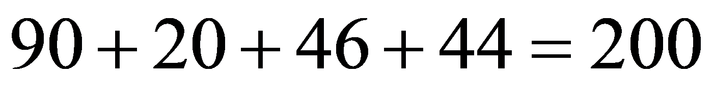
（名），故答案为：200；
（3）解：根据题意可得：
男同学喜爱足球的人数占八年级全体学生的百分比为：
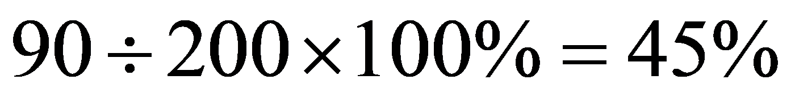
，男同学喜爱足球的人数占八年级全体学生的百分比是．
【点睛】本题主要考查了判断普查与抽样调查、求总体数量、样本占总体的百分比，熟练掌握相关是知识点是解题的关键．
21．某校举行了“强国有我”的硬笔书法比赛，现随机抽取各年级选手的成绩进行统计，并绘制成如图所示的两幅不完整的统计图（ 表示
表示 分，
分， 表示
表示 分，
分， 表示
表示 分，
分， 表示
表示 分，
分， 表示
表示 分，每组含前一个边界值，不含后一个边界值），请结合图中提供的信息，解答下列各题：
分，每组含前一个边界值，不含后一个边界值），请结合图中提供的信息，解答下列各题：

(1)求出 的值；
的值；
(2)把频数分布直方图补充完整；
(3)求扇形的圆心角的度数．
【答案】(1)
(2)画图见解析
(3)
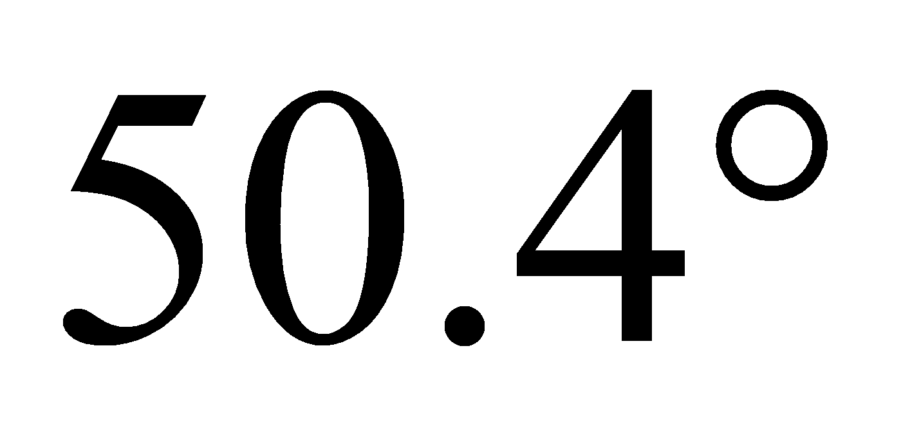
【分析】本题考查频数分布直方图、扇形统计图、求解扇形图中的圆心角，解答本题的关键是明确题意，利用数形结合的思想解答．
（1）先求出B组圆心角度数占周角的比例，再用B组人数除以对应的占比可得总人数，根据百分比概念可得m的值；
（2）总人数减去其它四个小组人数求出组人数，从而补全图形；
（3）用 乘以C等级人数所占比例可得．
乘以C等级人数所占比例可得．
【详解】（1）解：B组的百分比为
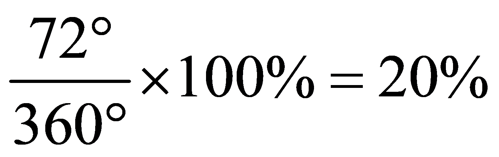
，抽取的总数为
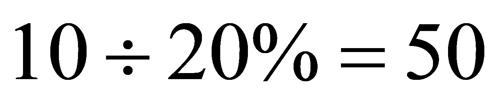
（人），∴
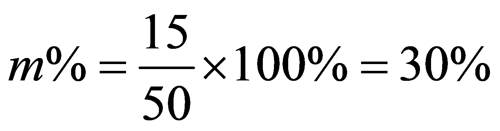
，则
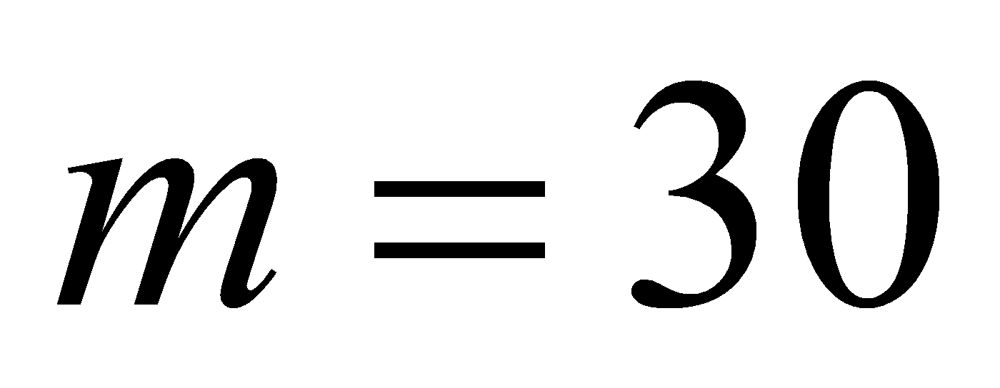
．（2）解：组的人数为
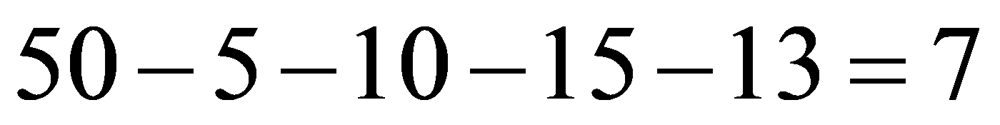
（人），补全频数分布直方图如图所示：
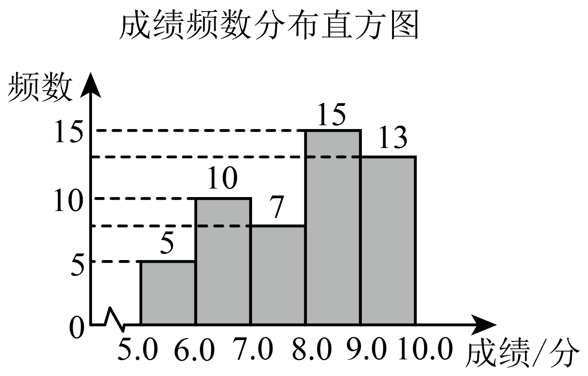
；（3）解：∵组的人数为 人，
人，
∴所在扇形的圆心角的度数
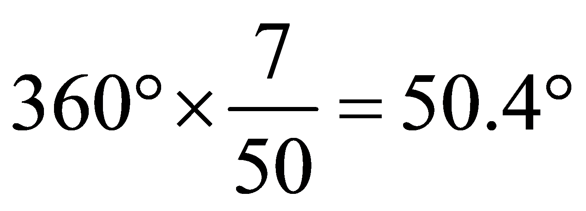
； 所在扇形的圆心角的度数为．
所在扇形的圆心角的度数为．
22．某校开展学生社团活动，设计了如下调查问卷：
姓名： 性别： 班级： 年龄： （单选）你想加入的社团为（ ） A．三棋社 B．书法社 C．乒乓球社 D．绘画社 E．不参与 |
为了估计各社团的人数，现在该校随机抽取50名学生做问卷调查，得到如图所示的两个不完全的统计图．

结合以上信息，回答下列问题：
(1)调查问卷中的姓名、性别、班级、年龄四个数据中属于定量数据的是________
(2)请你补全条形统计图（包括具体数据）并计算参与书法社团所在扇形的圆心角度数；
(3)已知该校共有学生1000人，请你估计全校报名参加绘画社团活动的学生人数．
【答案】(1)年龄；
(2)补全条形统计图见解析，
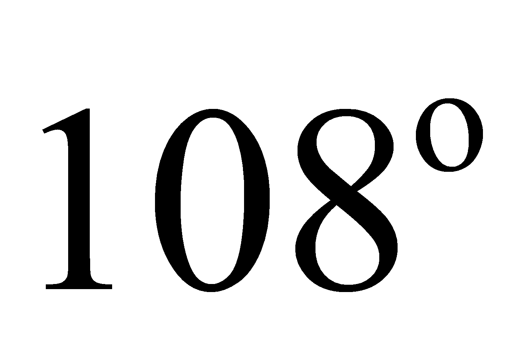
；(3)
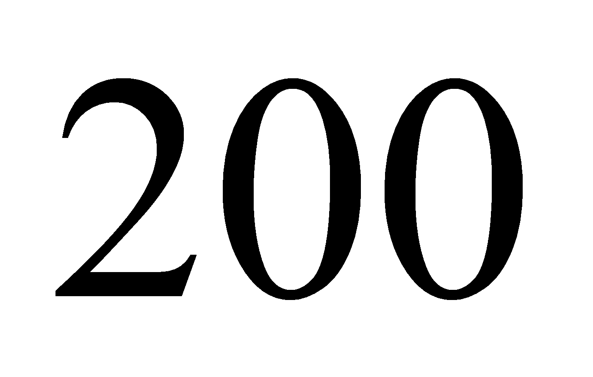
人【分析】（1）根据定量数据的定义，判断四个数据中属于定量数据的．
（2）先根据已知的比例和数量求出绘画社和书法社的人数，补全条形统计图，再根据书法社人数占比求出其所在扇形的圆心角度数．
（3）利用样本中绘画社的比例，估计全校报名参加绘画社团活动的学生人数．
【详解】（1）解：定量数据是指可以用数值表示且具有实际测量意义的数，在姓名、性别、班级、年龄中，年龄属于定量数据．
故答案为：年龄；
（2）解：绘画社人数： （人）
（人）
书法社人数：（人）
补全条形统计图如下，
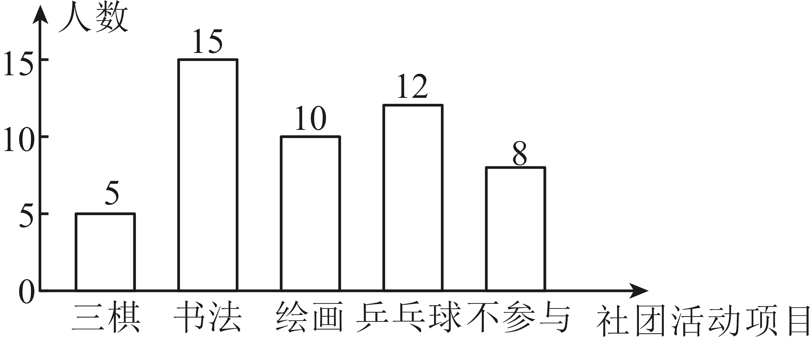
书法社所在扇形圆心角度数：
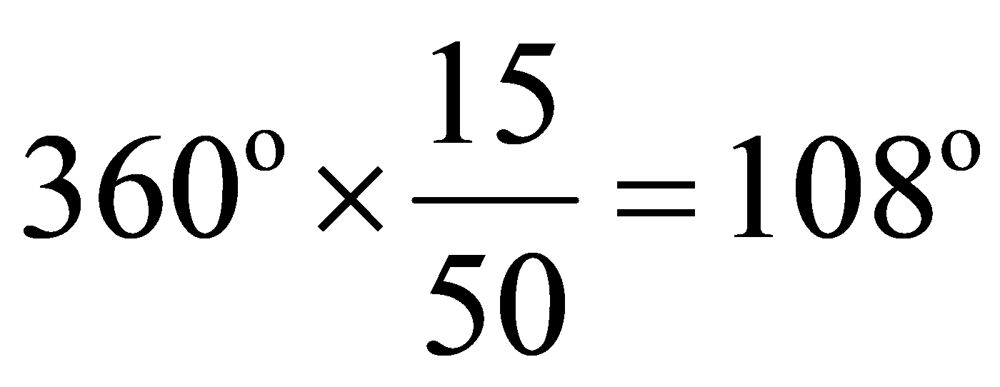
；（3）解：全校报名绘画社团人数：
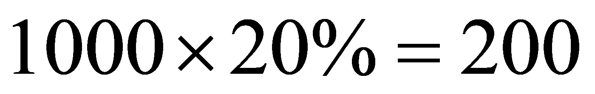
（人）【点睛】本题主要考查了统计的相关知识，包括定量数据的判断、条形统计图的补全、扇形圆心角的计算以及用样本估计总体，熟练掌握统计的基本概念和计算方法是解题的关键．
23．每年的6月6日是全国爱眼日．某校关注学生用眼健康，在爱眼日这天随机抽取50名学生进行视力检测，分成 ，
，
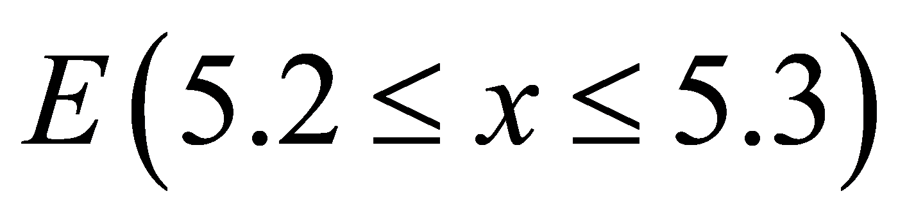
五组，将所得数据进行整理，信息如下：信息一：视力情况频数分布表如下表所示．
组别 | A | B | C | D | E | 合计 |
人数（频数） | 5 | 8 | 16 | a | b | 50 |
信息二：视力情况频数分布直方图如下图所示．请根据图表信息，解答下列问题：

(1) ___________，
___________， ___________，并补全视力情况频数分布直方图．
___________，并补全视力情况频数分布直方图．
(2)抽取的50名学生中视力大于或等于4.9的学生人数是多少？
(3)若全校有1500名学生，请根据样本估计全校视力大于或等于4.9的学生人数．
【答案】(1)18，3，见解析
(2)21人
(3)630人
【分析】本题考查了频数分布直方图和频数分布表的知识，读懂统计图表获取必要的信息是解题的关键．
（1）由频数分布直方图可知 ，再根据样本容量是50，求出a，补全频数分布直方图即可；
，再根据样本容量是50，求出a，补全频数分布直方图即可；
（2）根据数据计算即可；
（3）用1500乘以视力大于或等于4.9的百分比即可．
【详解】（1）解：由频数分布直方图可知，，
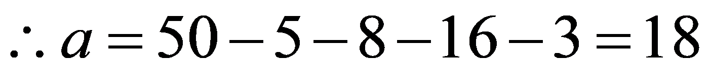
，补全频数分布直方图如下：
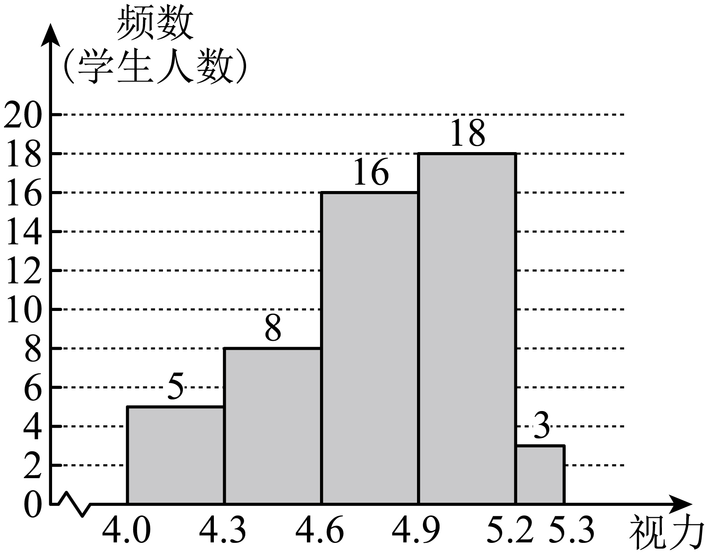
故答案为：18，3；
（2）视力大于或等于4.9的学生人数是
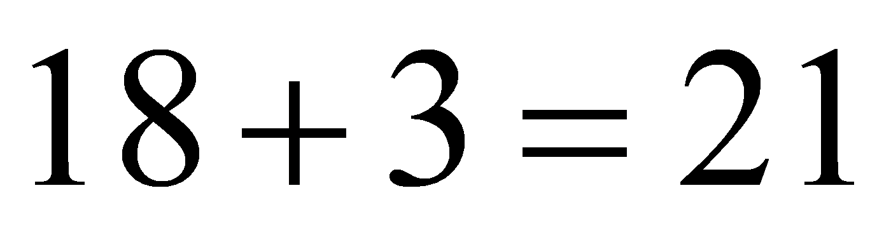
（人），答：抽取的50名学生中视力大于或等于4.9的学生人数是21人；
（3）
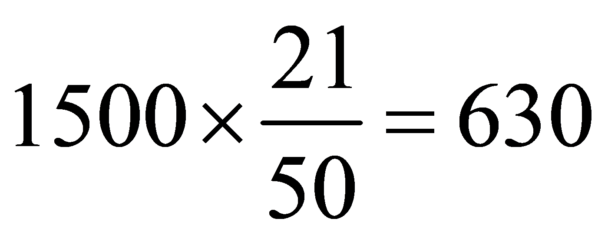
（人），答：估计全校视力大于或等于4.9的学生人数为630人．
24．某校举行“汉字听写”比赛，每位学生听写汉字39个，比赛结束后随机抽查部分学生的听写结果，以下是根据抽查结果绘制的统计图的一部分．
组别 | 正确字数 | 人数 |
A |
|
|
B | 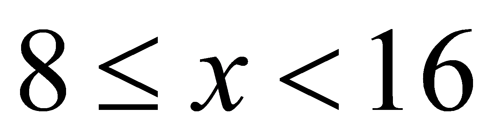 |
|
C |
|
|
D |
|
|
E |
|
|


根据以上信息解决下列问题：
(1)在统计表中， ，
， ，并补全条形统计图．
，并补全条形统计图．
(2)扇形统计图中“C 组 ”所对应的圆心角的度数是 ．
(3)若该校共有 900 名学生，如果听写正确的个数少于 24 个定为不合格，请你估计这所学校本次比赛听写不合格的学生人数．
【答案】(1)30，20，图见解析
(2)
(3)估计这所学校本次比赛听写不合格的学生人数为450人
【分析】本题考查统计图表，从统计图表中有效的获取信息，是解题的关键：
（1）用 组人数除以所占的比例求出抽查的人数，用总人数分别乘以
组人数除以所占的比例求出抽查的人数，用总人数分别乘以 组人数，
组人数， 组人数所占的比例，求出
组人数所占的比例，求出 的值即可；
的值即可；
（2）用360度乘以“C 组 ”人数所占的比例进行求解即可；
（3）利用样本估计总体思想进行求解即可．
【详解】（1）解：
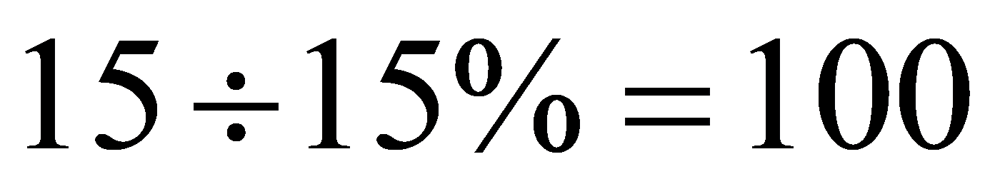
，；
补全条形图如图：
（2）；
故答案为：；
（3）（人）；
答：估计这所学校本次比赛听写不合格的学生人数为450人．
25．随着共享单车的普及，越来越多的居民选择共享单车作为出行的交通工具．为了解某社区居民每周使用共享单车的时间情况．随机对该社区选择共享单车出行的部分居民进行了调研，获得了他们每周使用共享单车时间（单位：小时）的数据，并将收集到的数据进行整理、描述和分析．下面给出了部分信息．
a．该社区居民每周使用共享单车的时间数据的频数分布表如下：
组别 | 使用时间（小时） | 频数（人数） |
第1组 |
| 5 |
第2组 |
| m |
第3组 | 35 | |
第4组 |
| 20 |
第5组 |
| 15 |


b．该社区居民每周使用共享单车的时间数据的频数分布直方图及扇形图如下：

根据以上信息，回答下列问题：
(1)本次调研，随机抽取___________名社区居民进行调查；
(2)第3组居民人数在扇形图中所对应的扇形的圆心角度数是___________ ：
：
(3)请补全频数分布直方图：
(4)若该社区共有500位居民选择使用共享单车出行，请你估计使用共享单车的时间小于10小时的居民约有多少人？
【答案】(1)100
(2)
(3)见解析
(4)估计使用共享单车的时间小于10小时的居民约有325人．
【分析】本题考查读频数分布直方图的能力和利用统计图获取信息的能力，解题的关键是利用统计图获取信息时，必须认真观察、分析、研究统计图，才能作出正确的判断和解决问题．
（1）用第五组的人数除以所占的百分比，即可求出抽取的总人数；
（2）用第3组的频数除以总人数，再乘以，即可求出对应的圆心角；
（3）由抽取的总人数减去其他四组的人数，求出的值，补全频数分布直方图即可；
（4）总人数乘以样本中第1、2、3组人数和所占比例即可．
【详解】（1）解：（人），
即本次调研，随机抽取100名社区居民进行调查，
故答案为：100；
（2）解：第3组居民人数在扇形图中所对应的扇形的圆心角度数是，
故答案为：；
（3）解：由频数分布表可知，，
补全频数分布直方图如下：
；
（4）解：（人），
∴估计使用共享单车的时间小于10小时的居民约有325人．